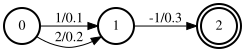

Basics
In this tutorial, we describe
What are ragged tensors?
What are the differences between ragged tensors and regular tensors?
How to create ragged tensors?
Various concepts relevant to ragged tensors, including
What is
RaggedShape?What is
row_splits?What is
row_ids?
What are ragged tensors?
Before talking about what ragged tensors are, let’s look at what non-ragged tensors, i.e., regular tensors, look like.
2-D regular tensors
import numpy as np a = np.array( [ [1, 2, 3, 6], [0, 1, 5, 0], [3, 6, 8, 10], ] ) print("a.shape:", a.shape) # It prints # a.shape: (3, 4)The shape of the 2-D regular tensor
ais(3, 4), meaning it has 3 rows and 4 columns. Each row has exactly 4 elements.3-D regular tensors
b = np.array( [ [ [1, 2], [0, 1], [3, 6], ], [ [5, 20], [0, -1], [-2, 9], ], [ [8, 7], [-3, 3], [2, -2], ], ] ) print("b.shape:", b.shape) # It prints # b.shape: (3, 3, 2)The shape of the 3-D regular tensor
bis(3, 3, 2), meaning it has 3 planes. Each plane has exactly 3 rows and each row has exactly two entriesN-D regular tensors (N >= 4)
We assume you know how to create N-D regular tensors.
After looking at what non-ragged tensors look like, let’s have a look at ragged
tensors in k2.
2-D ragged tensors
import k2 c = k2.RaggedTensor( [ [1, 2, 3, 6, -5], [0, 1], [], [3], ] )The 2-D ragged tensor
chas 4 rows. However, unlike regular tensors, each row inccan have different number of elements. In this case,
Row 0 has 5 entries:
[1, 2, 3, 6, -5]Row 1 has 2 entries:
[0, 1]Row 2 is empty. It has no entries.
Row 3 has only 1 entry:
[3]Hint
In
k2, we say thatcis a ragged tensor with two axes.3-D ragged tensors
d = k2.RaggedTensor( [ [ [1], [], [3, 5, 8], ], [ [1, 2], ], [ [], [], [5, 9, -1, 10], [], ], [ [], ], ] )The 3-D ragged tensor
dhas 4 planes. Different from regular tensors, different planes in a ragged tensor can have different number of rows. Moreover, different rows within a plane can also have different number of entries.Hint
In
k2, we say thatdis a ragged tensor with three axes.N-D ragged tensors (N >= 4)
Having seen how to create 2-D and 3-D ragged tensors, we assume you know how to create N-D ragged tensors.
A ragged tensor in k2 has N (N >= 2) axes. Unlike regular tensors,
each axis of a ragged tensor can have different number of elements.
Ragged tensors are the most important data structure in k2. FSAs are
represented as ragged tensors. There are also various operations defined on ragged
tensors.
At this point, we assume you know how to create N-D ragged tensors in k2.
Let us do some exercises to check what you have learned.
Exercise 1
Note
How to create a ragged tensor with 2 axes, satisfying the following constraints:
It has 3 rows.
Row 0 has elements:
1, 10, -1Row 1 is empty, i.e., it has no elements.
Row 2 has two elements:
-1.5, 2
(Click ▶ to view the solution)
e = k2.RaggedTensor(
[
[1, 10, -1],
[],
[-1.5, 2],
]
)
Exercise 2
Note
How to create a ragged tensor with only 1 axis?
(Click ▶ to view the solution)
You cannot create a ragged tensor with only 1 axis. Ragged tensors
in k2 have at least 2 axes.
dtype and device
Like tensors in PyTorch. ragged tensors in k2 has attributes dtype and
device. The following code shows that you can specify the dtype and
device while constructing ragged tensors.
import k2
import torch
a = k2.RaggedTensor([[1, 2], [1]])
b = k2.RaggedTensor([[1, 2], [1]], dtype=torch.int32)
c = k2.RaggedTensor([[1, 2], [1.5]])
d = k2.RaggedTensor([[1, 2], [1.5]], dtype=torch.float32)
e = k2.RaggedTensor([[1, 2], [1.5]], dtype=torch.float64)
f = k2.RaggedTensor([[1, 2], [1]], dtype=torch.float32, device=torch.device("cuda", 0))
g = k2.RaggedTensor([[1, 2], [1]], device="cuda:0", dtype=torch.float64)
print(f"a:\n{a}")
print(f"b:\n{b}")
print(f"c:\n{c}")
print(f"d:\n{d}")
print(f"e:\n{e}")
print(f"f:\n{f}")
print(f"g:\n{g}")
print(f"g.to_str_simple():\n{g.to_str_simple()}")
print(f"a.dtype: {a.dtype}, g.device: {g.device}")
print(f"a.to(g.device).device: {a.to(g.device).device}")
print(f"a.to(g.dtype).dtype: {a.to(g.dtype).dtype}")
Note
(Click ▶ to view the output)
a:
RaggedTensor([[1, 2],
[1]], dtype=torch.int32)
b:
RaggedTensor([[1, 2],
[1]], dtype=torch.int32)
c:
RaggedTensor([[1, 2],
[1.5]], dtype=torch.float32)
d:
RaggedTensor([[1, 2],
[1.5]], dtype=torch.float32)
e:
RaggedTensor([[1, 2],
[1.5]], dtype=torch.float64)
f:
RaggedTensor([[1, 2],
[1]], device='cuda:0', dtype=torch.float32)
g:
RaggedTensor([[1, 2],
[1]], device='cuda:0', dtype=torch.float64)
g.to_str_simple():
RaggedTensor([[1, 2], [1]], device='cuda:0', dtype=torch.float64)
a.dtype: torch.int32, g.device: cuda:0
a.to(g.device).device: cuda:0
a.to(g.dtype).dtype: torch.float64
Concepts about ragged tensors
A ragged tensor in k2 consists of two parts:
shape, which is an instance ofk2.RaggedShapeCaution
It is assumed that a shape within a ragged tensor in
k2is a constant. Once constructed, you are not expected to modify it. Otherwise, unexpected things can happen; you will be SAD.
values, which is an array of typeTHint
valuesis storedcontiguouslyin memory, whose entries have to be of the same typeT.Tcan be either primitive types, such asint,float, anddoubleor can be user defined types. For instance,valuesin FSAs containsarcs, which is defined in C++ as follows:struct Arc { int32_t src_state; int32_t dest_state; int32_t label; float score; }
Before explaining what shape and values contain, let us look at an example of
how to use a ragged tensor to represent the following
FSA (see Fig. 10).

Fig. 10 An simple FSA that is to be represented by a ragged tensor.
The FSA in Fig. 10 has 3 arcs and 3 states.
src_state |
dst_state |
label |
score |
|
Arc 0 |
0 |
1 |
1 |
0.1 |
Arc 1 |
0 |
1 |
2 |
0.2 |
Arc 2 |
1 |
2 |
-1 |
0.3 |
When the above FSA is saved in a ragged tensor, its arcs are saved in a 1-D contiguous
values array containing [Arc0, Arc1, Arc2].
At this point, you might ask:
As we can construct the original FSA by using the
valuesarray, what’s the point of saving it in a ragged tensor?
Using the values array alone is not possible to answer the following questions in O(1)
time:
How many states does the FSA have ?
How many arcs does each state have ?
Where do the arcs belonging to state 0 start in the
valuesarray ?
To handle the above questions, we introduce another 1-D array, called row_splits.
row_splits[s] = p means for state s its first outgoing arc starts at position
p in the values array. As a side effect, it also indicates that the last outgoing
arc for state s-1 ends at position p (exclusive) in the values array.
In our example, row_splits would be [0, 2, 3, 3], meaning:
The first outgoing arc for state 0 is at position
row_splits[0] = 0in thevaluesarrayState 0 has
row_splits[1] - row_splits[0] = 2 - 0 = 2arcsThe first outgoing arc for state 1 is at position
row_splits[1] = 2in thevaluesarrayState 1 has
row_splits[2] - row_splits[1] = 3 - 2 = 1arcState 2 has no arcs since
row_splits[3] - row_splits[2] = 3 - 3 = 0The FSA has
len(row_splits) - 1 = 3states.
We can construct a RaggedShape from a row_splits array:
import k2
import torch
shape = k2.ragged.create_ragged_shape2(
row_splits=torch.tensor([0, 2, 3, 3], dtype=torch.int32),
)
print(type(shape))
print(shape)
"""
<class '_k2.ragged.RaggedShape'>
[ [ x x ] [ x ] [ ] ]
"""
Pay attention to the string form of the shape [ [x x] [x] [ ] ].
x means we don’t care about the actual content inside a ragged tensor.
The above shape has 2 axes, 3 rows, and 3 elements. Row 0 has two elements as there
are two x inside the 0th []. Row 1 has only one element, while
row 2 has no elements at all. We can assign names to the axes. In our case,
we say the shape has axes [state][arc].
Combining the ragged shape and the values array, the above FSA can
be represented using a ragged tensor [ [Arc0 Arc1] [Arc2] [ ] ].
The following code displays the string from of the above FSA when represented as a ragged tensor in k2:
import k2
s = """
0 1 1 0.1
0 1 2 0.2
1 2 -1 0.3
2
"""
fsa = k2.Fsa.from_str(s)
print(fsa.arcs)
"""
[ [ 0 1 1 0.1 0 1 2 0.2 ] [ 1 2 -1 0.3 ] [ ] ]
"""
Shape
To be done.
data
TBD.